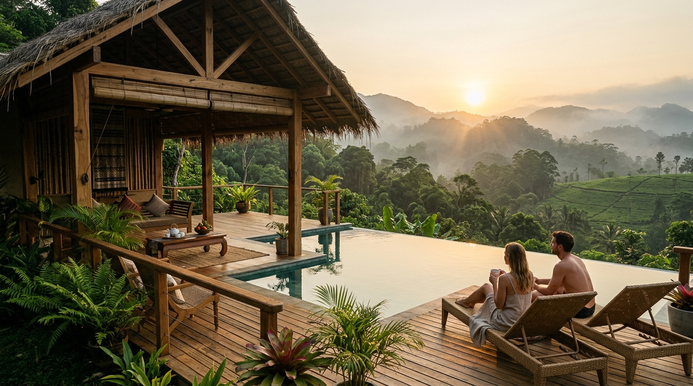

Natural Spring Infinity Pool
Fed by purified natural underground mountain springs without harsh chemical chlorine, our infinity pool hangs gracefully over the verdant Ella valley.
Float in crystal waters as morning mist dissolves into sunlit emerald tea plantations. Comfortable cushioned sun loungers, woven bamboo umbrellas, and poolside king coconut service are provided complimentary to all staying guests.
- ✓ Hours: 06:30 AM – 07:30 PM daily
- ✓ Water Source: 100% natural mountain runoff through charcoal bio-filters
- ✓ Complimentary: Organic sun protection, infused water & plush towels

Ayu Ayurvedic Wellness Spa
Rooted in Sri Lanka’s 3,000-year-old traditional Hela Wedakama and Ayurveda medicine, our wellness sanctuary helps balance your natural doshas.
Experience warm herbal steam baths in hollowed mahogany trunks, synchronized Shirodhara forehead oil therapy, and full-body Abhyanga massages using custom oils infused with cinnamon, gotu kola, and wild sandalwood.
- ✓ Consultation: Complimentary pulse check with our resident Ayurvedic doctor
- ✓ Oils: 100% single-estate cold-pressed herbal formulations
- ✓ Popular Treatment: 90-min Rainforest Rejuvenation Ritual

Guided Ella Rainforest Trails
Step straight from the resort perimeter into untouched indigenous cloud forest trails. Accompanied by our senior naturalist, discover secret cascades, hidden boulder pools, and ancient medicinal trees.
Whether you desire a gentle 45-minute family fern walk or an invigorating 3-hour trek up to the Nine Arch Bridge and Little Adam's Peak ridgeline, we tailor the path to your pace.
- ✓ Daily Departures: 06:45 AM (Sunrise Trek) and 03:30 PM (Sunset Walk)
- ✓ Gear Provided: Leech gaiters, carved trekking poles, and waterproof backpacks
- ✓ Inclusions: Organic trail snack pack with dried mango & Ceylon tea flask

Artisanal Ceylon Tea Experience
Ceylon tea is woven into the soul of the Sri Lankan central highlands. Our resort encompasses 6 acres of boutique organic tea terraces tended using biodynamic permaculture.
Don a traditional handwoven cane tea basket, learn the fine art of two leaves and a bud plucking alongside village estate masters, and taste rare unblended black, green, and silver-needle brews in our open-air wooden tasting pavilion.
- ✓ Sessions: Tuesday, Thursday, and Saturday at 10:00 AM
- ✓ Souvenir: Take-home personalized tin of hand-rolled resort tea leaves